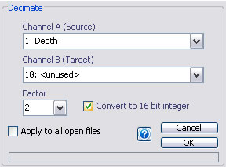

Decimation
Email: sigtool@kcl.ac.uk

Email: sigtool@kcl.ac.uk
Author: Malcolm Lidierth
Updated: November 2007
Decimation is the process of reducing the sampling rate of a signal by saving only every Nth point. Despite the name, decimation algorithms generally allow N to be set to any integer.
Decimation is performed in two stages;
The filter is a Type I Chebyshev lowpass filter of order 3-13 with nominal 0dB magnitude response in the passband and a passband ripple of 0.05dB. An odd order filter is use to ensure a 0dB response at DC (see TMW Technical Solution 1-2YWEQD). The algorithm designs a filter of the highest order possible to meet these condiditons. If such a filter can not be designed you will need to decimate in stages e.g. by 10, then 10 again to achieve downsampling by a factor of 100.
Decimation will be done in RAM if there is sufficient free memory. If not, a temporary channel will be created to receive the filtered data.
The algorithm used here closely follows that of the decimate function in the MATLAB Signal Processing Toolbox

Channel selections:
You must select a single waveform channel as the source in the Channel A selection menu. Channel B lists all empty channels in the file. You may also use a channel that is not empty (including the source channel) but this will overwrite any existing data.
Note that, with multiplexed channels, only the currently selected subchannel will be decimated. The output will therefore be a non-multiplexed channel.
Factor:
This is N above, the factor to downsample by.
Convert to 16 bit integer:
If this box is checked, filtering will be done in double precsion floating point but the result will be converted to16-bit signed integer format. The channel scale and offset values will then be determined automatically and will use the full range of available integer values (-32767 to 32768).
© The Author and King's College London, 2007-